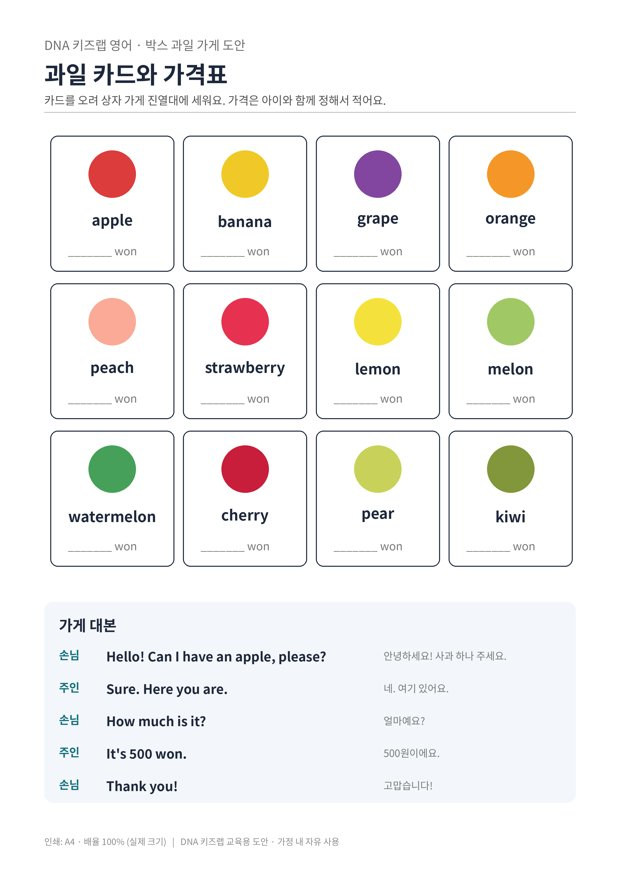

전체 단원 › 실험·활동 › 3~4학년 영어
박스 과일 가게

택배 상자로 과일 가게를 차리고, 영어로 사고파는 역할놀이를 해요.
30분 · 난이도 ★☆☆ 쉬움
준비물
- 택배 상자 1개 — 옆으로 눕혀 가게 진열대로 써요
- 과일 카드 도안 — 과일 12종과 가게 대본 (A4 1장)
- 장난감 돈 — 진짜 동전이나 이면지로 만든 종이돈
- 진짜 과일 몇 개 — 있으면 더 실감 나요 (없어도 돼요)
하는 방법
- 가게 차리기
상자를 옆으로 눕혀 진열대를 만들고, 과일 카드를 오려 세워 놓아요. - 가격 정하기
아이와 함께 과일마다 가격을 정해 카드 아래에 적어요. 100원 단위로 정하면 계산하기 쉬워요. - 대본대로 사고팔기
처음에는 부모님이 손님, 아이가 주인을 해요. 대본을 보며 천천히 말해요. - 역할 바꾸기
익숙해지면 역할을 바꾸고, 대본 없이 해 봐요. 과일 두 개를 사며 "Two apples, please."에도 도전해요.
3~4학년 영어는 실제 상황에서 쓰는 짧은 표현을 듣고 말하는 데 집중합니다. 가게 놀이는 같은 표현을 여러 번 자연스럽게 반복하게 해 줘서 효과가 좋아요. 아이가 문장을 다 말하지 못해도 "Apple, please!"처럼 낱말만 말해도 충분히 칭찬해 주세요.
학교 교육과정 연결
- [4영02-08] 자기 주변 주제에 관한 담화의 주요 정보를 묻거나 답한다.
- [4영02-10] 의사소통 활동에 흥미와 자신감을 가지고 대화 예절을 지키며 참여한다.